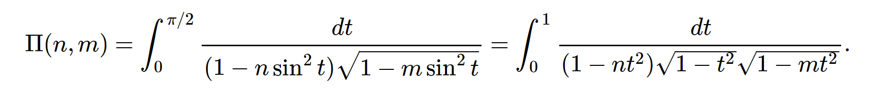
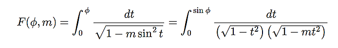

call these functions with ArbFloat, ArbReal, ArbComplex or Float64 args (all args are to be of the same type)
Complete Elliptic Integrals
the complete elliptic integral of the first kind
elliptick(m)elliptic_k(m) == elliptick(m^2)

the complete elliptic integral of the second kind
elliptice(m)elliptic_e(m) == elliptice(m^2)

the complete elliptic integral of the third kind
ellipticpi(n, m)elliptic_pi(n, m) == ellipticpi(n, m^2)

Incomplete Elliptic Integrals
the incomplete elliptic integral of the first kind
ellipticf(phi, m)elliptic_f(phi, m) == ellipticf(phi, m^2)

the incomplete elliptic integral of the second kind
elliptice(phi, m)elliptic_e(phi, m) == elliptice(phi, m^2)

the incomplete elliptic integral of the third kind
ellipticpi(n, phi, m)elliptic_pi(n, phi, m) == ellipticpi(n, phi, m^2)

Carlson's Symmetric Elliptic Integrals
- the symmetric elliptic integral of the first kind
ellipticrf(x, y, z)

- the symmetric elliptic integral of the second kind
ellipticrg(x, y, z)

- the symmetric elliptic integral of the third kind
ellipticrj(x, y, z)

(images from the Arb C library docs)